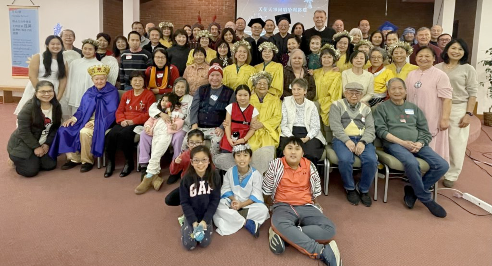
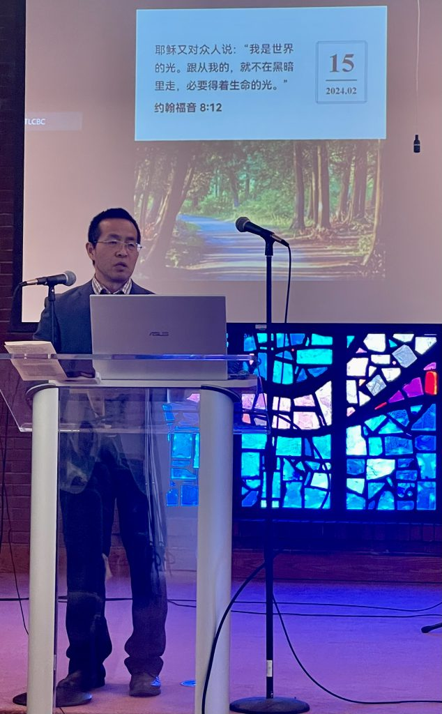

Prayer
主日早禱會
Sunday Prayer Meeting
9:00 AM – 9:30 AM
Begin Sunday morning with prayer together.Join us for worship, prayer, Bible study, and fellowship as we grow together in God’s Word and welcome people of all ages into a caring bilingual church community.

Interested applicants should submit a completed Youth Ministry Intern Application Form as instructed.
Explore the most recent restored church event entry from our local archive and browse past celebrations, fellowship events, and seasonal gatherings.
We are a bilingual Chinese and English church family serving the St. Louis area. Whether you are exploring faith, looking for a church home, or visiting for the first time, we would love to welcome you.
我們盼望成為一個敬拜神、彼此相愛、並向社區分享福音的教會。無論你是第一次來教會，還是在尋找屬靈的家，我們都誠摯歡迎你加入我們。
We seek to be a Christ-centered church that worships God, loves
one another, and shares the gospel with our community. We
welcome children, youth, adults, and seniors to worship and grow
together.
Simple, clear, and easy for first-time visitors to find the right time to join you.
9:00 AM – 9:30 AM
Begin Sunday morning with prayer together.9:30 AM – 11:00 AM
Bilingual church worship centered on Christ and Scripture.11:15 AM – 12:15 PM
Classes for children, Mandarin, Cantonese, and English groups.Moments of worship, fellowship, and community that reflect the heart of your church.


These can later link to full pages for sermons, events, offering, and Sunday school.
Listen to biblical teaching and recent messages.
Stay connected with seasonal events and church gatherings.
Support the ministry with clear and simple giving information.
Whether you are new to the area, visiting with family, or looking for a church home, we would love to welcome you this Sunday.
908 Jungermann Rd
St Peters, MO 63376
Sunday Worship: 9:30 AM – 11:00 AM
Email: haimark2003@yahoo.com